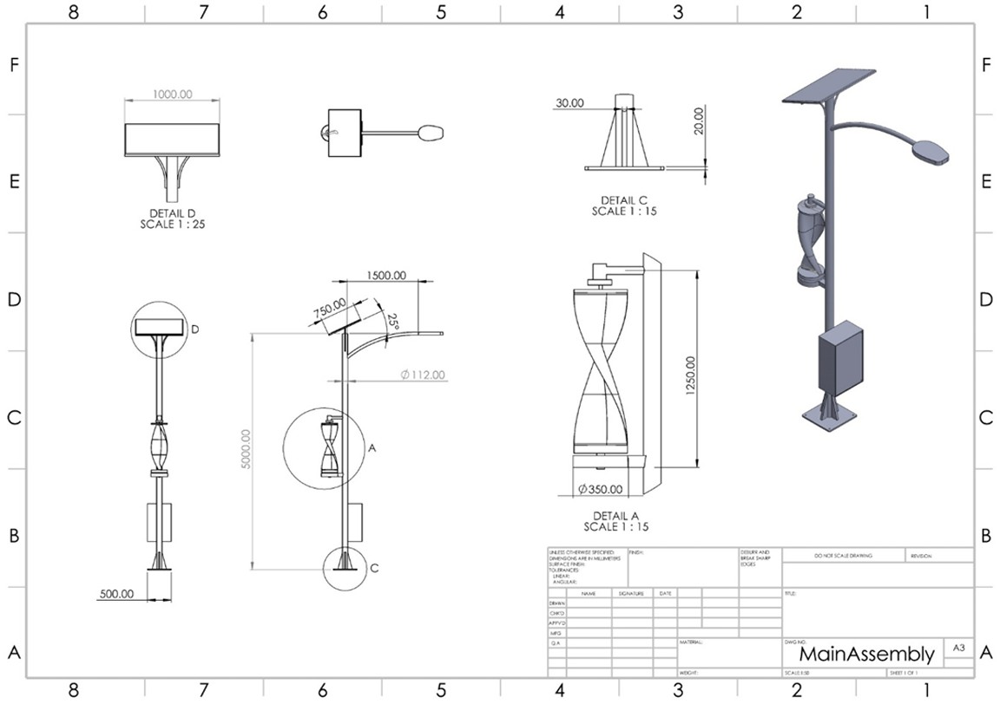
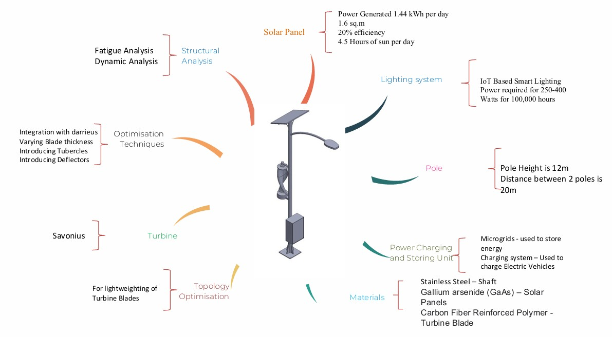
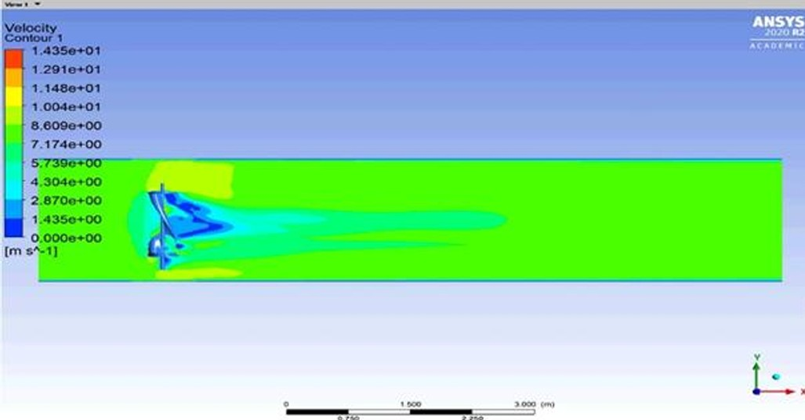
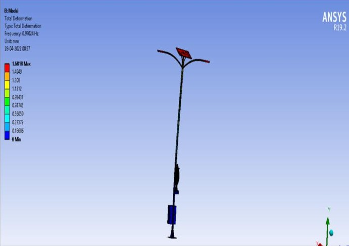
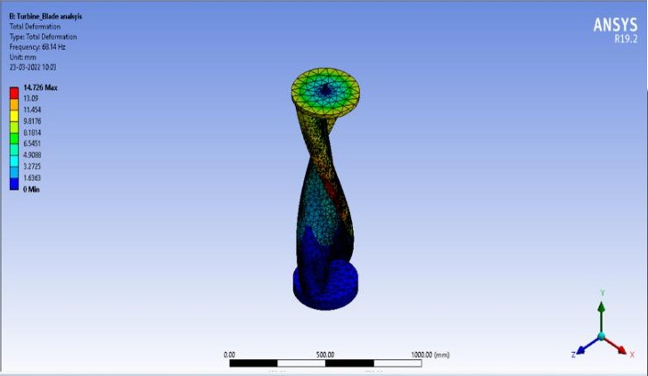

Dassault Systèmes Foundation | MBSE
Wind Powered Lighting & Charging Units
Autonomous Highway Infrastructure powered by Maglev VAWTs and Solar Microgrids
An integrated, off-grid solution designed to place autonomous lighting and charging units every 20 km along highways. By capturing traffic-induced wind turbulence and solar energy, the system independently powers smart lighting and provides scalable EV charging.
Tools & Methods
The Autonomous Infrastructure Challenge
Modern highway networks consume substantial energy for illumination, while the growth of electric vehicles is limited by gaps in rural charging access. To reduce grid dependency, this project uses a Model-Based Systems Engineering (MBSE) approach to design a self-sustaining assembly that combines a 1.6 m² gallium arsenide solar panel with a high-efficiency vertical-axis wind turbine.

Systems Architecture & MBSE
To coordinate the mechanical, electrical, and environmental subsystems, a top-down Model-Based Systems Engineering (MBSE) architecture defined the structural analysis requirements, turbine-blade optimization goals, and material selections linking the Savonius rotor to the microgrid charging units.


Aerodynamics & Viscous Flow CFD
To operate in the irregular wind profiles generated by moving vehicles, the design uses a Savonius-type vertical-axis wind turbine (VAWT), selected for its self-starting ability and lack of a complex yaw mechanism. Fluid flow was simulated in ANSYS Fluent using a dynamic moving mesh and a K-Epsilon SST turbulence model to resolve the viscous sublayer and evaluate wall shear stress.
Magnetic Levitation Suspension
To reduce the start-up friction of mechanical bearings in low-speed environments, a neodymium magnetic levitation (Maglev) suspension was integrated. Two large ring magnets and evenly spaced permanent magnets create a repulsive suspension gap for the rotor.
Structural FEA & Modal Analysis
Modal analysis was performed in ANSYS to extract the first six natural frequencies and corresponding mode shapes of the supporting pole and turbine. The objective was to identify potential resonance risks from rotor rotation, blade-passing excitation and traffic-induced turbulence.
The analysis solves the structural eigenvalue problem [K]φ = ω²[M]φ, where stiffness and mass determine the natural frequencies. The resulting total-deformation contours visualize relative motion within each mode; their amplitudes are not predictions of actual operating displacement.

Supporting Pole
The displayed mode shows greater relative movement near the upper lighting and solar-panel assembly than near the base, consistent with a global bending response. This helps identify flexible regions and assess the influence of pole stiffness and elevated component mass.

Turbine Assembly
The meshed turbine exhibits a nonuniform deformation pattern at 68.14 Hz, with greater relative motion in portions of the blade than at the lower support. This mode helps assess blade flexibility and potential interaction with periodic aerodynamic excitation.
Resonance screening requires comparing these natural frequencies with the operating excitation spectrum. Modal analysis alone does not establish actual vibration amplitudes or fatigue life; forced-response analysis or experimental vibration measurements would be needed for that assessment.
Power Electronics & Microgrid Integration
An intelligent electro-mechanical relay system acts as the central logic controller, switching the primary input source between the turbine and the solar array based on environmental availability. The output features a dual-topology microgrid supporting Vehicle-to-Grid (V2G) and Grid-to-Vehicle (G2V) charging, utilizing boost converters and LC filters to safely regulate high-voltage delivery to a 100Ah Lithium-ion EV battery bank.
Economic Feasibility & Cost Analysis
A comprehensive cost analysis was conducted to validate the commercial viability of the system for real-world application. Through consultation with industry mentors and supplier brochures, the total fabrication budget was calculated to include the turbine (€1,030), 60W solar panels (€260), integration with existing street light structures (€194), and the complete EV charging battery and wiring system (€85).